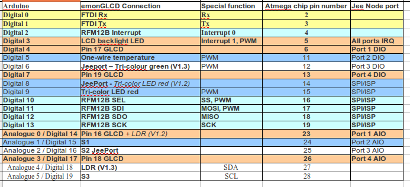

After sorting the teething problems of the base station I'm now having problems on the GLCD side..
I'm seeing rf fail on the LCD under the export / import section. link to graph.
This is from the base station and all seems fine this side.. Although i do see spikes in the data sent to
1 emontx packet rx2 {rf_fail:0,power1:1825,power2:831,power3:0,voltage:24741}
3 ok | Date: Wed, 28 Mar 2012 15:38:12 GMT
4 emonbase sent
5 emonglcd: 2256
1 emontx packet rx2 {rf_fail:0,power1:1820,power2:829,power3:0,voltage:24753,temperature:22.56}
3 ok | Date: Wed, 28 Mar 2012 15:38:18 GMT
4 emonbase sent
5 emonglcd: 2256
1 emontx packet rx2 {rf_fail:0,power1:1830,power2:835,power3:0,voltage:24745,temperature:22.56}
3 ok | Date: Wed, 28 Mar 2012 15:38:23 GMT
4 emonbase sent
5 emonglcd: 2262
{SNIP}
1 emontx packet rx2 {rf_fail:0,power1:402,power2:807,power3:0,voltage:24852,temperature:22.87}3 ok | Date: Wed, 28 Mar 2012 15:43:39 GMT 4 emonbase sent 5 emonglcd: 2287
Pictures here of the GLCD with error
http://openenergymonitor.org/emon/sites/default/files/IMG_0386.JPG (2).JPG
.jpg){kind=link}
Im also not sure iv edited the code correctly for type 2 solar.. The header in the emonGLCD_SolarPV says to
// this sketch is currently setup for type 1 solar PV monitoring where CT's monitor generation and consumption separately // to use this sketch for type 2 solar PV monitoring where CT's monitor consumption and grid import/export using an AC-AC adapter to detect current flow direction // -change line 69-70, 160-164 - see comments in on specific lines. See Solar PV documentation for explination
Well 69-70 is a comment "\\-------------------------"
and 160-164 "Serial.println("3 emonglcd sent");"
The only section i can see that you need to edit is in the void power_calculations() area and the code for type 2 does not work..
grid=emontx.grid; // for type 2 solar PV monitoring consuming=gen + emontx.grid;
Compiles with the following error...
emonGLCD_SolarPV.cpp: In function 'void power_calculations()':
emonGLCD_SolarPV:219: error: 'struct PayloadTX' has no member named 'grid'
emonGLCD_SolarPV:220: error: 'struct PayloadTX' has no member named 'grid'
I have changed it to this and it seems to be ok.. but im not convinced its correct..
grid = emontx.power1; // for type 2 solar PV monitoring
consuming = gen + emontx.power1;
So over to you guys.
Thanks Rob
Re: GLCD -Type 2 SOLAR PV help.
Hi Rob,
Good work assembling this units. Sorry about the confusing comments in the emonGLCD sketch, they dated back to before we recently updated the sketch. I've corrected them now, the new version is up on github.
Your correct you should use the lines:
The sketch assumes that emontx.power1 is consumption (type 1) or grid (type 2) and emontx.power2 is solar PV gen. Make sure you double check this is the case.
The RF fail on the emonGLCD is a general RF fail for all the values not just the grid import exporting. Try moving the units closer together.
The serial values you have posted above look correct, although the emonTx voltage looks rather high (24V!), this can't be right since this would damage the emonTx. How are you powering it?
Re: GLCD -Type 2 SOLAR PV help.
Hi Glyn
No worries on the sketch problems. Its great to see a product that works even if it does require a little playing around with..
I will upload the code again to it tonight and report back..
I'm not sure why I'm getting RF fails as the units are with in 10 meters of each other ..
Am i right in thinking the TX reports to the base and the base reports to the GLCD or is that wrong..
Could this be why im getting these weird spikes in the CMS system as im not seeing this at all on the display or in the output from the base. See picture
http://openenergymonitor.org/emon/sites/default/files/CMS1.jpg
The TX is being powered off of a USB phone charger that has a 5v output but 1A so should not be outputting 24V. Nothing seems to be getting hot so i think this is duff info or see below.
I thought the line below reads this
1 emontx packet rx2 {rf_fail:0,power1:402,power2:807,power3:0,voltage:24852,temperature:22.87}Power1 : import / export
Power2 : PV
Power3 : N/A
Voltage : Grid voltage as in 248.52V
Temp : from GLCD.
That leads me on to the next problem is that the Grid voltage is reporting a bit high.. (well if i understand the above) its showing as 248.52 and im reading it at 244.61v from a powermeter and a Digital Voltmeter well with in (0.5Volts).. Iv tried the calibration section in "emonTx_CT123_Voltage.ino" but it seems to make it worse and it reports 0 from the PV even though the PV is still producing around 100watts. (the generation meter is still ticking so must still be producing)
im changing the following in emonTx_CT123_Voltage.ino
From
To as iv got the Strontronics power adapter.
Iv not changed the lower number as iv got no idea on the Burden resistor used.
Anyway thanks again.. Will let you see the blog once its all up and running as im doing some write up for our local paper after they saw my blog and interview with Google for the powermeter (no defunct) Video here
Rob.
Re: GLCD -Type 2 SOLAR PV help.
Hi just tried to add this and keep getting hit by the spam filter..
Iv not changed the lower number as iv got no idea on the Burden resistor used. But i think i should be using 138.8 instead of 113.4 eg from here. http://openenergymonitor.org/emon/buildingblocks/different-acac-power-adapters but when i do things start to go weird. Eg showing im useing loads more power than i am eg from 400watts to 600+watts.
Anyway thanks again.. Will let you see the blog once its all up and running as im doing some write up for our local paper after they saw my blog and interview with Google for the powermeter (no defunct) Video here
Rob.
Re: GLCD -Type 2 SOLAR PV help.
Nice blog, and video! Hope the little one is well.
Sorry, my mistake I got confused with 'voltage'. Your correct that's the RMS AC mains voltage, not the emonTx supply voltage! The emonTx_CT123 (non- AC-AC adapter) transmits the emonTx supply voltage while the emonTx_CT123_voltage transmits the AC RMS mains voltage.
You will have the 18 ohm burden resistor. Therefore if your using the Strontronics AC-AC adapter you should be using:
I'll try and double check this when I'm in the lab over the weekend. Remember to repeated this for each channel. I will update the code on github to make this the default calibration, so it should be correct out of the box.
emoncms graph does not look right at all. Which feed is that? Are you other feeds ok? If your posting to vis.openenergymonitor.org I might be able to logon and take a look, I'll have to talk to Trystan who administers the server. What's your username?
The emonTx transmits power data to both the emonGLCD and the emonBase. The emonBase transmits the current server time to the emonGLCD and the emonGLCD replies to the emonBase with the current temperature from the on-board sensor.
Re: GLCD -Type 2 SOLAR PV help.
Hi Glyn..
Yes were all doing well now.. She was a bit of a hand full for the first 6 months but is so much fun now.. Glad you liked the video. We never made it to the website but the write up did.. Shame i thought it was a great idea..
I was changing it for all three cts so im not really sure why.. Will have another pop at the weekend..
Yes for the mo im using the vis.openenergymonitor.org site.. username is rob+energy[at]walkers[dot]gb[dot]com
The graph is for the import / export feed and to be honest im not really sure on how to set it up as i would like to show graphs for the import/export as well as PV, voltage etc maybe even swing dials but this is still a learning experience at the mo.. im still trying to get the other feeds to register correctly. they show up in inputs but not in the feeds section.. If you could have a look that would be great.
Thanks that makes sence.. The emonTX is the furthest away but is only through a partition wall the base and the GLCD are both powered off of a USB hub so are in spitting distance. Will see if i can move the base slightly closer to see if it find
Re: GLCD -Type 2 SOLAR PV help.
Right have updated the tx to the right calibration values
1 emontx packet rx2 {rf_fail:0,power1:-689,power2:1027,power3:0,voltage:25469,temperature:22.06}Re: GLCD -Type 2 SOLAR PV help.
Glyn
Did you get a chance to look at he calibration issues? or the huge spikes in the CMS system?
Iv had a play around with the CMS system and it seems to only show it on the import / export section the PV is fine as is the temps so iv got no idea why its showing..
Thanks
Rob
Re: GLCD -Type 2 SOLAR PV help.
Hi Rob,
Sorry I have been away for a couple of days. We plan to build a more advanced test rig to enable us to better test the accuracy of the monitor over the full current range.
Based on some testing we had recently had carried out we can expect the CT secondary winding to be accurate to a few turns, so the error in the ratio should be no more than 0.5%. The CT burden resistor is a 1% tolerance component, so the total error should less than 1.5%
so for an 18 Ohms burden resistor: 111.11 is the calculated calibration coefficient value, add in 1.5% error would give a range of: 109.5 - 112.8.
These calibration values are bit lower than the ones we have been using so we wanted to double check them before issuing any recommendations, but they did come from a reliable source. Sorry for the confusion on this issue. We we be able to talk with more confidence once we undertake some further testing of our own.
As for the spikes in the data on emoncms I have no idea what could be causing them. If the data looks correct as it comes from the emonTx then the spikes could be caused during the wireless transmission. Another device or another emonTx on the same wireless frequency and network?
Re: GLCD -Type 2 SOLAR PV help.
Glyn
Thanks for this no worries I understand your busy and even more that you need some time off now and then.
Iv sorted out the CMS problem.. It was my fault and should of spotted it sooner but also should of been picked up in the system..
In the inputs section i had added Grid Voltage to the import / export section ( i did not know / under stand this ) so both were being logged to a feed called Grid.. Iv not changed this to Grid voltage and Import - export and all is working correctly.
Iv still not looked into the voltage / calibration stuff yet. On my list todo as is 100 other things.. Will do it asap as i really need to get this blog post up.
Also iv edited the my copy of the "emonGLCD_SolarPV" and think it may be useful for others but im not confident of changing the master (even if i can). Is there a way i can get someone to look over it as im OK at changing code but im no programmer..
Quick summery of things done. Some are minor some are new
Things i would like to add but dont have the know how.
Anyway if iv over stepped the mark please let me know..
Rob
Re: GLCD -Type 2 SOLAR PV help.
Iv added the code here https://github.com/rob-walker/EmonGLCD/tree/master/emonGLCD_SolarPV Hope this is ok
The clearing of the usage and pv totals still dont clear. Still looking into this.
new look here
Old
Re: GLCD -Type 2 SOLAR PV help.
Hi Rob,
Glad you managed to fix the emoncms problem. Some sort of visulisation to show what inpus are mapped to which feeds would be a useful feature. I imagine your not the only one to have had made that mistake!
Please don't think that you have over stepped the line, there is not line! This is a collaborative project, it's user contributions that really help to move things forward. The emonGLCD improvements looks great, thanks a lot. I'll have a got at testing them this afternoon and report back. Do you think you could send the openenergymonitor github a git pull request? This will allow me to merge your changes into the master.
I like the time on the font page and the alignment of the temperature and importing/exporting. I'll look into how the time could be replaced with RF fail. If this is too tricky, maybe RF fail could be displayed as '!RF' in the top left or right hand corner. Maybe this is too subtle!
PWM'ing the LED's is something I always had in mind when designing the emonGLCD, but never got round to implementing! Both LED's (red and green) are on digital channel which support hardware PWM'ing. The line analogWrite(greenLED, 0-255) were 0 is off an 255 is full brightness should be able to adjust the brightness of the LED. Turning on both the green and red LED's at the same time should give orange. It would be great if you could investigate the possibility of the LED's smoothly transitioning from green to red depending on the amount of energy being imported. I.e bright green = lots of export (happy days), dull green = just about exporting, orange = about 50/50 import-export. And then various shades of red depending on export level.
It might also be cool to have a play about with PWM heart beat effect Apple Mac book style, maybe the speed of the beat could be proportional to the amount of energy being using/generated.
It might be the case that these PWM LED effects are not desirable, often people don't like flashing LED's in their living space!
Adding sending the LDR value to emoncms would be possible. It would require adding another variable to the emonGLCD packet structure (call it 'ldr') on the both the emonGLCD (line 64) and on the NanodeRF_Power_RTCrelay_GLCDtemp (line 48). Then add the line emonglcd.ldr=analogeRead(LDRpin); where LDRpin=4. in the 'things to do every 10's section' in the emonGLCD sketch
Finally you will need to add str.print(",ldr:"); str.print(emonglcd.ldr); to send the ldr value to emoncsm on line 222 of NanodeRF_Power_RTCrelay_GLCDtemp sketch.
Re: GLCD -Type 2 SOLAR PV help.
Good work Rob,
I have been thinking of putting the time on, and I have made the red LED's flash (much to the wife's displeasure) but I think she will like your method better, I'll try it out tomorrow.
Steve
Re: GLCD -Type 2 SOLAR PV help.
Glyn. You should have a request now.. Hope you get it if not let me know..
I'm Happy to look at the PWMimg of the leds and see if i can come up with some thing. Also see if its possible to move the settings for say Type 1 or Type 2 Solar to a variable so people (like my parents) would only have to update one area of the sketch. Will look at adding the LDR info also. Think it would be good to capture it now and then work out if we need it / or what we can do with it..
Steve. Please if your going to use this take it as beta. I'm very rusty at programming and i could well of introduced more errors or bugs. But im glad you like it.. I maybe rusty at programing but hope i know what info people would like to see.
Should of added the number in the bottom left next to the time in my version is the LDR value (661in the pic) Its really just for me to work out what ranges i expect to see eg 0-300 Dark room 301-500 lights on. 501-800 sunny 801 -1024? In the SUN..
Maybe we can use this to PWM the back light? in the aim of having a battery powered display. (still thinking about this.)
Rob
Re: GLCD -Type 2 SOLAR PV help.
Switches can be made to work in software! See https://github.com/openenergymonitor/EmonGLCD/tree/master/emonGLCD_tester. Atmega has internal pull-up resistors which can be enabled. This solves the problem. We will be offering switches to anyone who has bought an emonGLCD through the shop next week. I'm planning a blog about this soon.
Re: GLCD -Type 2 SOLAR PV help.
Rob.
No problem with it being "Beta" most of the code here has to be taken 'as seen' like you I'm o/k at altering the existing code, but not so good at writing from scratch!
I have been looking into the code for the Tri-color LED's to make them go from Green to Red although being updated every 10 seconds makes it a bit 'jumpy' I wondered if calling it every 200mS, rather than every 10 second would create a too big overhead ??
I will post my bit of code when I get it to work properly
Regards Steve
Re: GLCD -Type 2 SOLAR PV help.
Shouldn't be a problem calling it every loop. The RFM12 is interrupt based so won't be effected by other things going on in the loop.
Re: GLCD -Type 2 SOLAR PV help.
In case you haven't seen it here's a blog post on the emonGLCD switch fix: http://openenergymonitor.blogspot.com/2012/04/emonglcd-v13-switches-fix.html
Re: GLCD -Type 2 SOLAR PV help.
Glyn I have seen that.. My order has been placed and im looking forward to getting the switches. Lets hope they are easy to fit once the LCD is in?
Once the buttons are in mine i will update my code to use them..
Did you get the Github request? Not checking you have looked at the code more in that iv sent it correctly.
Thanks
Rob
Re: GLCD -Type 2 SOLAR PV help.
Switches added to both board and code and all seem to OK ish..
The display seems to stop working now after a while.. Anything 1 min to 30 mins..
The emonGLCD still works as the leds change colour but the display just goes blank..
Will try to go back to the code before.. adding the switches to the code.
Re: GLCD -Type 2 SOLAR PV help.
Hi Rob.
I had the same sort of problem. I was using the USB power supply from my Kindle to power the GLCD until I bought some more ( from Ebay) I had to go back to the Kindle PSU and its been alright since.
Also
could it be the backlight issue that Glyn has commented out in the sketch
backlight_control(); //- issue when emonGLCD does not receive correct time from base station display switches off - disable auto switch off at night as a precaution
Re: GLCD -Type 2 SOLAR PV help.
Hi all,
I have all 3 nodes working nearly OK... I have modified the sketch so that
a) the temp display on the glcd alternates between the internal and the external every 10 seconds.
b) The temp includes a min and max for both.
c) The leds go out when the ambient light level is low
d) The backlight intensity varies according to the ambient light level.
e) I have attached a battery pack comprising 4 x aaa nimh cells and attached them to the glcd via the 6 pin connection. It does not charge the nimh cells properly, but it does make the unit portable for at least 5 minutes...
f) I have ordered a solid state relay and am hoping to attach that to my immersion heater to use any slack power......
g) I have placed a small length of heatshrink tubing around the LED so that it is not affected by the light of the leds.
h) Have ordered the switches for the glcd....
i) Recalibrated the Solar CT to correspond with the inverter.
I have the following issues/questions
1) The nanode ethernet issue is a pain and, because of it and before the posting here, I purchased an additional nanode.
2) Emoncms3 sends back the time as GMT, this is not what I want on the GLCD;-
2.1) I have looked at converting GMT to BST in the nanode, but decided that I did not want to get into writing code to convert a three char month to the month number so that the real time could be calculated based on the date.
3) I would like to modify the returned vale from the emoncms3
3.1) So that the time was GMT or BST as appropriate.
3.2) So that the returned datra included not just the date, but other info such as total usage and total generated.
4) From time to time the display blanks for no apparent reason - to be fair I have not looked hard yet.
5) The payload between the units seems to be declared as int in some sketches and double in others. I have now settled on double.
6) Have noticed that the CT value monitoring usage is affected by by the solar CT. If you disconnect the solar CT by removing the CT from the cable, the usage CT goes up. (this is a type 2)
Well chuffed.. SWMBO thinks I am mad........
Once stabilised I may be be building some more for others......
Re: GLCD -Type 2 SOLAR PV help.
Hi Steve..
Its powered right off of the computer and has been fine before. Its just when PWMing the LCD backlight it seems this is when it goes wrong.. Well changing it on the fly. The backlight still works so does the rest but the screen gets corruption on it and then just dies to a blank screen.
If i disable the LCD PWM and use a fixed value all seems ok. Maybe its a speed thing now with the switches attached as it was fine before the switches were added.
The LEDs seem fine however, Still testing this so this maybe wrong
Maybe we should try to put our heads together then to get the LEDs to change correctly.
Rob
Re: GLCD -Type 2 SOLAR PV help.
Ok adding code to it again seems to break it all the time now.. If you PWM in real time the LEDs or LCD-LED.
int LDR=analogRead(LDRpin); // Get LDR Value int PWMSetting = map(LDR, 0, 1023, 10, 150); // Map the data from the LDR from 0-1023 (Max seen 1000) to var LEDsbrightness min/max PWMSetting = constrain(PWMSetting, 0, 255); // Make sure its a Valid PWM value 0-255This causes a crash
But just setting "int PWMSetting = 200;" Seems to be ok.
This is after adding the code for the Switches. So I wonder if something is being dragged lower than it should?
pinMode(enterswitchpin, INPUT); pinMode(upswitchpin, INPUT); pinMode(downswitchpin, INPUT); digitalWrite(enterswitchpin, HIGH); digitalWrite(upswitchpin, HIGH); digitalWrite(downswitchpin, HIGH); //enable Atmega328 10K internal pullup resistorsRe: GLCD -Type 2 SOLAR PV help.
Re: GLCD -Type 2 SOLAR PV help.
Hi Rob,
Thanks a lot for the GitPull request. I didn't merge it automatically in the end but I did mirror most of your changes in update I just made. Thanks a lot.
List of changes to solar PV:
Many of the changes have been mirrored to Home Energy Monitor emonGLCD example.
Check out the updates here: https://github.com/openenergymonitor/emonGLCD. You can use git pull to update your code. It works very well and will keep any slight notifications you have made. Check out http://jeelabs.org/2011/12/27/the-convenience-of-git/.
Re: GLCD -Type 2 SOLAR PV help.
Glyn
No worries glad some of it was of use..
Could the Type 1 or Type 2 Solar a constant variable? Just it maybe easier for people with not much programming experience to looks for all the things they should change in one place. I understand at the mo most people are going to be experienced at this. Iv set up a test and could share if your interested. Im not sure if this adds more over head to the code and if its worth the bother though.
Im now looking at getting the buttons to display more detail Eg Total Import / Total Export to go along with the total PV and total usage. Any ideas? of what varables i should be looking at as im not 100% sure how you work out the import or export
Should i start a new thread as this seems to of changed from the original question?
Rob
Re: GLCD -Type 2 SOLAR PV help.
Total export Kwh would be a good figure to display. It would simply by generated Kwh - consumed Kwh, it would be go negative if consumption > generation for that day.
Yes I've been thinking about how to simplify the solar PV setup. A flag variable at the beginning of the sketch to set what type of system is in use would make things much easier. I'll take a look, and let you know when I've made the changes. Maybe you could test out the code for me, since I'll be traveling for the next week and not have a solar PV system to hand!
Re: GLCD -Type 2 SOLAR PV help.
Glyn
No worries on being a tester at all. Email me or post here
Re: GLCD -Type 2 SOLAR PV help.
Attached is some beta emonGLCD firmware with the option at the top of the sketch to set type 1 or type 2 solar PV system at top of the sketch. This has the potential to simplify setup for first time users. Please give it test since I don't have a PV system to hand right now.
I've set default to be type 1.
Also please check the notes in the comments are consistent.
Cheers,
Re: GLCD -Type 2 SOLAR PV help.
Glyn
Seems to work fine for me.. I'v changed it to type 2 as thats the system iv got, Button(s) work as does the time etc.. I cant seem to notice any difference from the normal one so thats good.
Any reason the noise offset is so large? (line 239) iv got mine set to 5 watts and thats fine maybe different inverters have different noise though. (Sunnyboy 1700 in my case.)
im still looking at the PWM of the LED and Backlight even more now iv got mine on a lipo battery. So i guess that this maybe of some interest to you.
Rob
Re: GLCD -Type 2 SOLAR PV help.
Great, good to hear. Thanks for testing it out.
Yeah, we have been paying it safe by setting quite a high minimum generation threshold. We have found some inverters register a higher consumption at night. We would like to investigate this further, I think it can differ if the inverter is a transformer or transformer less inverter and depending on if the user is using an AC-AC adapter to monitor real power.
I will lower the default minimum threshold to 50W and post the new code up to github.
Yeah, I'm very interested to hear how you get on with LED PWM'ing.
Re: GLCD -Type 2 SOLAR PV help.
Glyn
The PWM'ing is not going well..
It seems there is a bug in it.. It works but after a while the screen just goes blank.. Not sure if its a hardware or software thing.. Seems as soon as you PWM either the backlight or LEDs at some point the screen gets corruption and then dies. The program still runs as the leds change as per the import / export.
Am addring this to the display file
void LEDs_control()
It works just that the at some point the screen goes blank.. This can be 5 mins or 1 hr.. so if you could have a look / or try it out that would be great..
Re: GLCD -Type 2 SOLAR PV help.
I'm running it now, seems to be working ok. I'll update you with how it gets on. We have found that using a particular type of USB adapter can cause the LCD screen to go blank. Maybe you could try another sort?
The backlight and LED intensity changing is working well, it's quite subtle but I think it will do the trick. No one wasn't their emonGLCD illuminating the room when their trying to watch a film! It's just a case of tuning it, maybe the backlight and LED's could be dimmed further when it's really dak.
I had in the back of my mind that the LED intensity could reflect the power levels i.e when lots more power is being produced than is being consumed the green LED's would be very bright, when only slightly more power is being produced than used then would glow green dimly. Same for consumption, bright red at times of high consumption.
What do you think?
I think it would be a good idea to use the emonGLCD tester/demo sketch as a place to demo these PWM'ing techniques.
Re: GLCD -Type 2 SOLAR PV help.
Im running this currently straight from the computers USB but have also tried several different USB power supplies. (Apple, HTC, Motorola) even a LIPO battery and always get the same after a while..
Will have ago again though may be iv got a duff voltage reg some where (like the blog post) and when changing the PWM settings its browning out the LCD as thats 5V not 3.3V?.. Maybe it not fully bad, I dont know just a guess,
Yea i wanted it to be subtle as if its too noticeable you will be glancing at it all the time and that could get annoying.
Had thought about the leds reflecting the power usage eg dim green when exporting a bit to full green when exporting allot, But this would require the user to input the PV size as different people have different sizes so one persons export of 100w is great when the others is not. But this could be done.. The other reason for keeping them dim is that i want to make it portable so having the led at full pelt would drain the battery quickly. But i guess this may be just my goal.
Was even thinking of them changing from red to orange to green as you get close to 0 import / export but thought the simple green / red would be better
I agree the setting could be tweaked even more when dark. i did have them as user vars at the start of the sketch as then the user could decide. Although the LEDs would be off when dark the GLCD could be even darker.
Thats fine if you want to use the TEST/demo sketch.. it was more of a trial for me even though its not that successful at the mo.
As a thought could the GLCD backlight in the next version be a RGB back light as then you would not need the top leds.
anyway will report back in a bit.
Re: GLCD -Type 2 SOLAR PV help.
Also think out loud
At the mo the sketch does not dim the GLCD backlight incase it gets the wrong time / or does not..
could the following line work.
DateTime now = RTC.now(); int hour = now.hour(); //get hour digit in 24hr from software RTC if ((hour > 21) || (hour < 5) && ((millis()-last_emonbase)<20000))) { night=1; glcd.backLight(0); } else { night=0; glcd.backLight(LDRbacklight); }this way if the GLCD does not get a response from the base it leaves the backlight on?
Re: GLCD -Type 2 SOLAR PV help.
Sketch is still running fine for me.
Good idea adding the line to check for recent updates from emonBase. I have also added a line to only set the time from the emonBase when hour>0, since the old versions of the emonBase code can return 0 (midnight) when the server returns null response.
You have a good point that people have different sized PV's. For now people can just set the size in the sketch, we can assume that in the UK the average array is between 2-4Kw. I have just added PWM control to the indicator LED's to indicate amount of power being used. See video:
I've committed these updates and your backlight light level control to the current emonGLCD examples of github. Thanks a lot for your help.
Re: GLCD -Type 2 SOLAR PV help.
It's been blogged: http://openenergymonitor.blogspot.com/2012/05/emonglcd-solarpv-led-proportional.html
It's not perfect but it's an improvement on just switching the LED's. Thanks again for your help.
Please test and feedback.
Re: GLCD -Type 2 SOLAR PV help.
Right i think iv got to the bottom of my display crashing (not working) every now and then..
It seems that If i set the led to green and then turn off the red it sometimes crashes . If i always set the current led on to off and then the off one to on it works fine.. WEIRD..
Iv changed the following so it works for me.. Still don't know why this effects me.
if ((gen>0) && (night==0)) { if (gen > consuming) { //show green LED when gen>consumptionanalogWrite(redLED, 0); analogWrite(greenLED, LDRleds); } else { //red if consumption>gen analogWrite(greenLED, 0); analogWrite(redLED, LDRleds); } } else{ //Led's off at night and when solar PV is not generating analogWrite(redLED, 0); analogWrite(greenLED, 0); } }Thats great Glyn.. will test out the code now.. Its great to see it in the wild.
You nearly had me.. Changing the RF12 frequency from 433..
You don't need line 117 in the display file (comment that no longer matters.)
And 134 - 136 or 139-141 Dup comment.
Re: GLCD -Type 2 SOLAR PV help.
I'm also finding that the lcd screen randomly goes blank. I'm using the standard emonGLCD_SolarPV sketch on a type 2 system, powered by a usb adaptor from the open energy monitor shop.
Re: GLCD -Type 2 SOLAR PV help.
That's an interesting find Rob. Very strange. I've committed your change to the github, since it should not matter which way round the analog writes are, will be interesting to see if it fixed the problem for anyone else.
Good spot with the RFM12B frequency, thanks, that was a mistake! I try and keep the default to be 433Mhz, I was using an 868Mhz her e for testing, forgot to change it back.
Vworp: are you using the version with the LED and backlight PWM dimming code committed today? Has your emonGLCD been working fine in the past?
Re: GLCD -Type 2 SOLAR PV help.
No PWM dimming code yet, I'm using a sketch downloaded last weekend. The emonGLCD was assembled and tested earlier in the week, but only pressed into full time service yesterday afternoon.
So far, the lcd has blanked three times at 5-10 hour intervals. Not sure if the emonGLCD was still working other than the display being off, the LEDs were all lit green and it never occured to me to test if that was accurate.
Next time, I'll try drawing additional load from the grid, see the LEDs change to red, and also check the temperature feed on emoncms
Re: GLCD -Type 2 SOLAR PV help.
Ah that's interesting, so that indicates that maybe it's not the PWM code we have just introduced that is causing the problems.
I have had the same problem with the display going blank but only with one type of usb power supply. How are you powering the emonGLCD? Have you go a different USB PSU you can use? It might be something do to with switching frequency noise.
Re: GLCD -Type 2 SOLAR PV help.
I've got three of the usb adaptors from the openenergymonitor shop. What I'll do, the next time it fails, is rotate the adaptors, swap the GLCD one for the emonTX or nanode one.
Re: GLCD -Type 2 SOLAR PV help.
I think I've found the problem, and possible solution http://openenergymonitor.org/emon/node/679. Please let me know if it works for you.
Re: GLCD -Type 2 SOLAR PV help.
Will try this tonight.. iv got some 200ohm resistors i could try. Do i take it we can use the PWR and GND holes near the USB port?
Great to see im not going mad..
This does seem to be the problem when using the LiPo packas well, charging it its fine but as soon as the battery has finished charging it crashes. output goes from 5 volts to 5.2v
Could the LCD be modded in ver 1.3 to be supplied from 3.3v instead? eg cutting a trace and using a fly lead to connect to 3.3v
as in cut the lcd track pin 14-15 from PWR line and connect to the JeePort 3.3v or would that put too much strain on the 3.3v regulator?
Re: GLCD -Type 2 SOLAR PV help.
Yup, that would work and is actually a better fix, less wasteful of power. Let me know how you get on, maybe this could be a better fix to recommend if it's not too difficult.
Board design and schematics are up here: http://solderpad.com/openenergymon/emonglcd/.
I would recommend doing the voltage regulator fix as you describe to plower the LCD from 3.3V if you plan to use a lipo that had got a fully charge o/p of greater than 5V.
Re: GLCD -Type 2 SOLAR PV help.
Well connected the glcd to the 3.3v rail now and all good so far.. All works think the display needs slightly more contrast but will sort this out soon.
Could not cut the track as the track is under the LCD do had to snip the Pins 14 - 15 but its fine as the PCB does not come all the way to the edge so you can easily get a fly wire to it.. If you were to do the mod before the LCD in place i would expect it would be alot quicker.
Showing the LiPo solar charging circuit and a DC-DC step-up from 3.7V to 5V. Now could be replaced with a 3.3v regulator but may need a boost circuit for when the battery is lower than 3.0v
This board is over sized as i was going to try to hide the LCD back light but in the end gave up as the switches would also be hidden.
LiPo sandwich. LiPo is Velcro to the normal back and the extra plate mounted to the two extra stand offs for the angled display. LiPo is a 2700mha and have had 2days so far not seen it exhausted yet.
Edit.. The pictures show now expand to a full size for easy of looking.
Re: GLCD -Type 2 SOLAR PV help.
Nice! Tidy job.
I would be interested to hear how long the LiPo lasts. Are you running it with the backlight and LED's?
Re: GLCD -Type 2 SOLAR PV help.
Thanks..
Seems that this solves the problem for me at least as the LiPo fully charged under solar lastnight and the display did not crash..
Will let you know.. was charged last night at 8PM then disconnected from the mains then. has run all night and was still ok this morning. Should get 2 -3 days easy out of it..
Yes the LiPo runs every thing on it.. LED LCD fully. Was the reason i was trying to get the LDR so it could dim the LEDs to save power..
Re: GLCD -Type 2 SOLAR PV help.
Update....
Battery lasted from Tues 20:00 to Fri 23:05.
So that's 3 days and 3 Hrs Completely off of mains power or 75Hrs.
Its been running the LCD, LCD backlight ( if ((hour > 22) || (hour < 5)) ) Color Leds. All LED's are PWM in some way (running Glyn latest code)
The battery is 2700mA / 75hrs = 36mAh so the average power draw for my GLCD is 36mA That's not too bad is it? Wonder how much the 5V step up converter is using and how i can lower it.
Also wonder how long it takes the 6V 2W solar panel to charge the battery now.
As a side not the display has looked fine for the 3 days but when going to bed last night it was starting to look a little streaky. But that was around 10.30 and it only lasted another 35 mins after that.
Re: GLCD -Type 2 SOLAR PV help.
Thanks for the info Rob, its really good to have some real world battery life data. After work in the emonTx SMT is complete I plan to re-design the emonGLCD as with SMT electronics to enable it to be easily pre-assembled. Including the option of a battery back is high on the list of new features to add. I wonder how long it will last with no backlight or LED's?
You could power the emonGLCD directly from the 3.7V battery. Just connect it straight into the 3.3V power line to bypass the voltage regulator. 3.7V is not high enough to damage the RFM12B. The datasheet states an absolute maximum voltage of 6V and a working voltage of 3.3V. I've ran and RFM12B at 5V for quite some time and it seemed to work just fine. I think their just playing it safe. It will be interesting to see if this does result in a longer battery life. The boost converter actually could be helping you as it will drain the battery lower than would otherwise be possible, although it will also have a power loss associated with it.
According to JeeLabs the backlight should use 6mA.
Atmega328 and RFM12B will be using quite a bit of power since they are working at full power all the time about 7mA when the RFM12B is not transmitting and about 14mA when it is.
On the emonTx we put the ATmega328 and RFM12B to 'sleep' in between readings, this brings down consumption to about 0.1mA. Although this is more complicated on emonGLCD since it needs to be 'awake' to listen for data packets from the emonTx. Maybe some sort of timing algorithm could be implemented to put the emonGLCD to sleep for a defined period in between emonTx and emonBase RF e.g:
Take a look in the emonTx lib to see how the sleep code is implemented: https://github.com/openenergymonitor/emonTxFirmware/blob/master/emonTx_CT123/emontx_lib.ino
Re: GLCD -Type 2 SOLAR PV help.
Do you want me to run it without the LCD-LED and other LEDS? Would give an idea then of power usage for just the main parts of the board.
Im not sure I can power the emonGLCD from the Battery as when its fully charged it’s more like 4.2v and when its being charged and its either 5V (USB) or 6.2V (Solar cell) when charging, I know its over 5.11V as the LCD used to crash when it had finished charging so don’t think i should connect it to the 3.3V line by its self.
You can get a schematic for the solar charger im using from here http://ladyada.net/products/usbdcsolarlipo/download.html
Its a shame it does not have a fuel gauge on this board as that would be very useful.
It also looks like a 6v 2W solar panel is not big enough to get enough charge in it as it die again last night after having a day of sun on it (well ish)
That idea looks great
Re: GLCD -Type 2 SOLAR PV help.
Ah ok, 5.11V is quite high. You make your own fuel gauge by putting the PWR input through a voltage divider to scale it to 3.3V max then putting the result into a free analog pin. A 330K ohm and top and a 560K ohm on the bottom should do the trick.
Re: GLCD -Type 2 SOLAR PV help.
I know how much the RFM12B and Atmega use, I've done quite a bit of measuring of the emonTx. It would be interesting if you could run the emonGLCD with the LCD on but backlight and LED's off.
Thanks for this.
Re: GLCD -Type 2 SOLAR PV help.
Ok just charging the battery again and have altered the code to make sure no LEDs are on .. EG backlight and top leds are off..
Will have a look at making a fuel gauge.. im not great at electronics. I can hack them around but working out what resistors etc to use im pretty poor at..
Do you know what the input limits are for the MCP1702 as the whole of my GLCD is now 3.3V going through this (well i think it is) im wondering if this would limit the output voltage from the solar / battery for me or is this too high a voltage for it..
It looks like it should be ok to 13.2V http://shop.moderndevice.com/products/mcp1702-jeenode-regulator and ww1.microchip.com/downloads/en/DeviceDoc/21983A.pdf seem to say its ok, But want to check.
Re: GLCD -Type 2 SOLAR PV help.
Ah great. Hope it's still going strong.
Yes, 13V 250mA are the limits for the MCP1702. I don't imagine you will be getting close to this.
Re: GLCD -Type 2 SOLAR PV help.
Re: GLCD -Type 2 SOLAR PV help.
Thanks for the update. Thank's promising. But I know it can be improved quite a bit if the ATmega sleep code as implemented. I'll see if I can hack together a little test in the next few days.
Re: GLCD -Type 2 SOLAR PV help.
OK trying again with out the step up converter.. Have noticed i need to increase the contrast to 0x20 from 0x18 as it just looks washed out now its running from 3.3v
Ok Glyn would be nice to see if we can do better..
Re: GLCD -Type 2 SOLAR PV help.
Implementing the sleep code is a bit more involved than I thought. There are a number of things that need the Atmega not to be sleeping to work: PWM'ing the backlight and LED's and the real time clock. Looks like our best bet at the moment is to just power optimize the current sketch (as you have done).
Re: GLCD -Type 2 SOLAR PV help.
Ok Glyn thats a shame been looking my self and there are a few options i guess but non easy that i can see..
It could sleep then wake using the watchdog timer (not very accurate) this should not matter as the GLCD gets the time from the internet?
Could the RFM12B wake it when receiving data?
Are the following pins free
Digital 3,4,5,7
Analog 0,1,3
Could the addition of a RTC like the DS1307 be used to help this?
Sorry for all the questions, im not a hardware expert (well not like this am fine with computers).
Re: GLCD -Type 2 SOLAR PV help.
See below for my emonGLCD port map, it should highlight what ports are free.
Only Dig 8 is free on V1.3.
I also had the idea of the RFM12B waking up the ATmega. I know it's possible to wake up the ATmega using one of the interrupt ports (Dig 2 and Dig3), the RFM12B is already connected to Dig2. The driver for the RFM12B is interrupt based, lots of information about this on the JeeLabs.org website.
I've not heard of anyone using the RFM12B to wake up the ATmega when a packet is received. My guess is that the RFM12B requires the ATmega to be awake to enable it to receive packets. Maybe a post on the JeeLabs forum would clear this up?

Re: GLCD -Type 2 SOLAR PV help.
Update..
The GLCD lasted 5 Days 20Hrs and 41 mins this time with out the 5V step up converter. So just using the MCP1702 to sort out the voltage from the LiPo pack. LCD 3.3v mod, LCD using PWM and LEDs PWM as per import / export value.
so thats 141 Hrs (rounded 41Mins to 1 Hr)
141 Hrs / 2700mha = 19.15mAh LCD on 3.3V all the rest standard as per current firmware for GLCD.
against
107hrs / 2700mha = 25.2 mAh for 3.3v Mod but still with 5v Step up.
75Hrs / 2700mha = 36mAh LCD 5v and 5v step up.
Really not sure what else could be done to increase the time now with out putting the unit to sleep? Maybe at night when the LCD light is off?
Re: GLCD -Type 2 SOLAR PV help.
Correction its still going ignore above. It had either crashed or one of the other units had as it was displaying 0 but still on. Rebooted them all and is still going.. Will update when it finally dies again..
Re: GLCD -Type 2 SOLAR PV help.
Ignore again.. 10 mins after resetting it all and it went blank. No idea if at 9.40 am it really did die (when i thought it had or just 10 mins after i got home....)
Have it on charge again and will think about what i can do to reduce the power draw.
Re: GLCD -Type 2 SOLAR PV help.
Right a re run of above. Seems it was correct..
2/6/12 Sat 0910 Starts
8/6/12 Fri 0810 Stops reporting temp to CMS 1847 before screen goes blank.
So
5 Days 23 Hrs (2700mAh / 143Hrs = 18.88mAh) If you count when it stopped reporting the temp to CMS or
6 Days 9 Hrs 37 (2700mAh / 153.5Hrs = 17.59mAh) if you count when it dies a death.
Recap. This is running a 3.3V screen, LiPo 2700mAh battery running straight to the 3.3v regulator.
Re: GLCD -Type 2 SOLAR PV help.
Right in a bid to cut power iv implemented some sleep code.. I mean iv used other peoples code as its too advanced for me but i get its gist and know what it does, Most of it anyway..
Its using the watchdog timer.
All works fine, apart from the LEDs on the top they flash, Strange the LCD backlight does not do the same? (any ideas.)
See video for flashing. 0.5second sleep. 16ms sleep
the flashing only happens when using analogWrite, digitalWrite is uneffected.
Code can be seen here https://github.com/rob-walker/EmonGLCD/tree/master/emonGLCD_SolarPV
All seems to work as expected.. You do need to add a delay after it wakes up as it has a tendency to crash the display / not update it, This delay needs to be bigger the more you sleep.
so sleeping for 32ms only needs 10ms delay.but sleeping for 1second need 200ms delay.
Re: GLCD -Type 2 SOLAR PV help.
Ok so i did not think this through correctly..
It all works. Except the totals for pv and usage. They seem to be roughly 50% down on what they should.. I guess i should of worked that out..
so it sleeps for 32ms but is 50% down on expected.
The flickering i think iv worked it out but iv not got a fix.. The backlight for the LCD is on a Interupt pin, I have a theory that these pins dont get powered down where the LEDs on top are on normal pins and do there for flicker but i could be well off..
Anyway i think im at my limmit of programming on this.. Will keep the code running and see how long it lasts on battery.. But will be going back to the normal code after as the flashing is really distracting.
Re: GLCD -Type 2 SOLAR PV help.
Another update on the sleep code..
the EmonGLCD was set to sleep for 32ms this has increased the time now to 7 days almost to the dot.
7 Days (2700mAh / 168Hrs = 16.07mAh) With 32ms Sleep code. (does have annoying flashing leds but not backlight)
6 Days 9 Hrs 37 (2700mAh / 153.5Hrs = 17.59mAh) 3.3v GLCD mod.
(2700mha / 107hrs = 25.2 mAh) for 3.3v Mod but still with 5v Step up.
(2700mha / 75Hrs = 36mAh) LCD 5v and 5v step up. NO PWM.